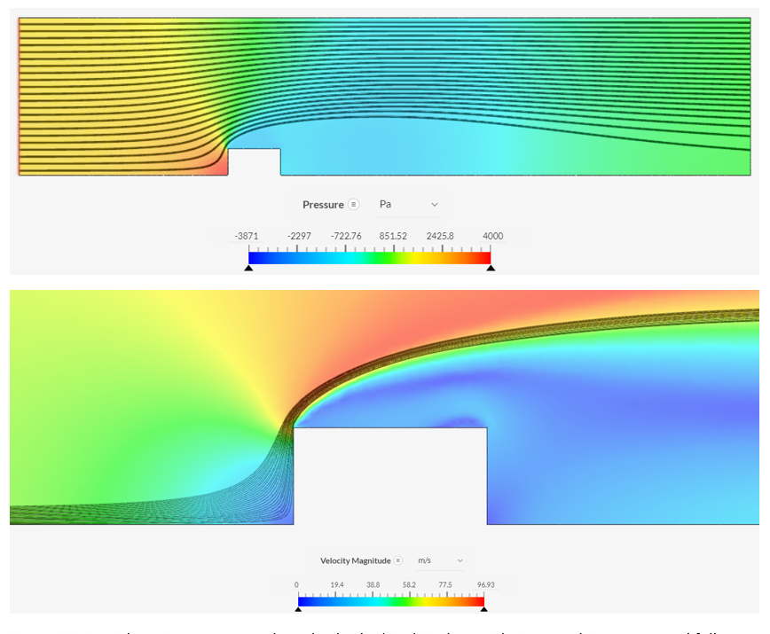
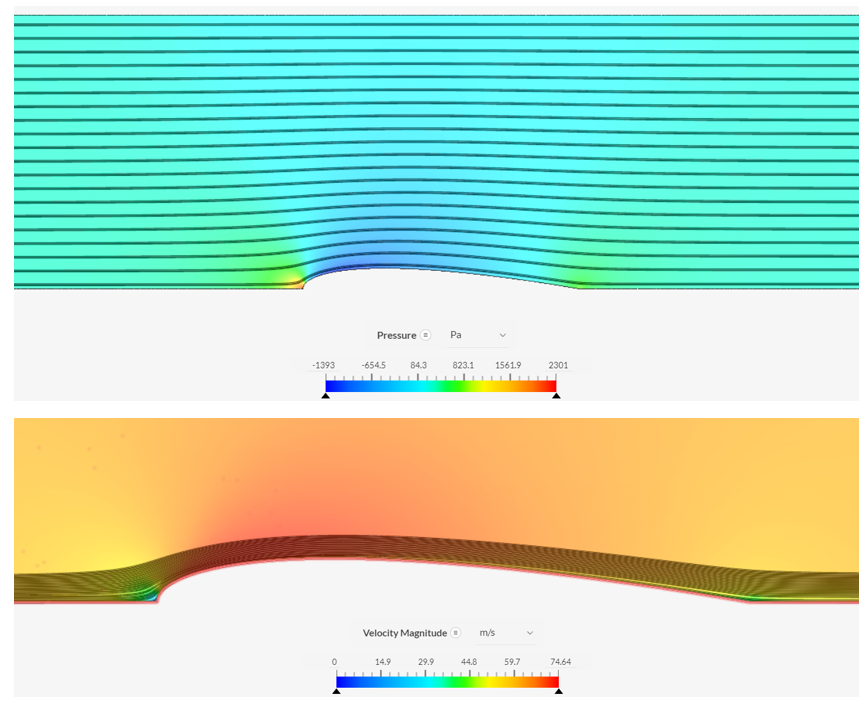

CFD Case Studies
These projects mainly served as learning and exploratory case studies for internal and external flow analyses for fluid dynamics and aerodynamic applications. Both case studies utilize SimScale for computational fluid dynamics simulations.
"Design of a Minimal Head Loss Turbulent Pipe Diffuser"
The first CFD analysis involved redesigning a diffuser to minimize fluid head loss in comparison to an inefficient sudden expansion diffuser. Theoretical calculations were performed to find the ideal expected pressure drop across a diffuser by Bernoulli's equation which served as the base measurement. Using Simscale, an internal flow (k-omega turbulence model) simulation is performed across decreasing mesh sizes to create a mesh-independent study that fully converges on a steady pressure drop and velocity profile throughout the diffuser. The results of this are shown below.
As shown in the plot above, the graph reaches a sufficiently refined mesh size and creates the pressure and velocity profiles shown. A loss coefficient for this sudden expanstion diffuser is calculated to be K = 0.802 given the large stagnation region near the throat of the diffuser. A new design is created to expand this throat region and try to better mimic the streamline behavior of the fluid to attempt to prevent the turbulent stagnation regions. In the redesigned diffuser shown above, a reduction in head loss is calculated to be 51.2% which is a significant improvement. The coefficient of loss for this new design is K = 0.394 which verifies the superiority of this design.
"Geometrical Effect on Aerodynamical Drag Forces in Turbulent Flow: CFD Case Study"
This case study was performed to understand the formation of drag on an object subjectd to external flow. A cube, cylinder, and NACA 0015 airfoil were used to compare viscous and drag forces under turbulent conditions (i.e., high Reynold's number flow, k-omega turbulence model). For each object, a mesh-independent study was performed to make sure (1) the system fully converges to steady flow patterns, (2) the residuals of the system all decrease to zero, and (3) the system reaches consistent values with mesh size. The results of each of the simulations are shown below.
Leading Edge Separation
Recirculating Flow
Aerodynamic Design
A significant result of this analysis shows that theoretical predictions for drag forces can only be used as an order of magnitude approximation (see expected values below). For the cube, a large stagnation region is created which results in the high drag force and pressure force on par with the expected stagnation pressure. The cylinder created a turbulent, recirculatory region behind the body which similarly experienced a high level of drag as a result of the stagnation regions. For the airfoil, however, the streamlined design prevented almost all turbulence at the boundary layer and as such the large surface area was the main contributor to drag. It is also observed from this specific simulation that the design of the airfoil appears to create a negative drag component from pressure (or Bernoulli) forces and as such contributes to the thrust of the body.